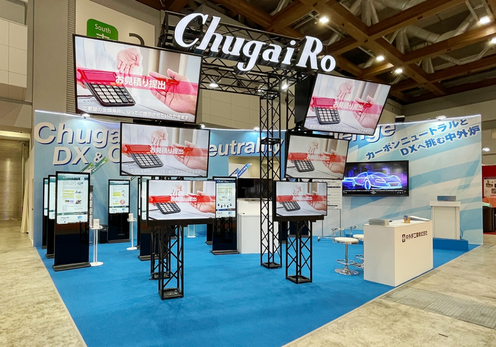
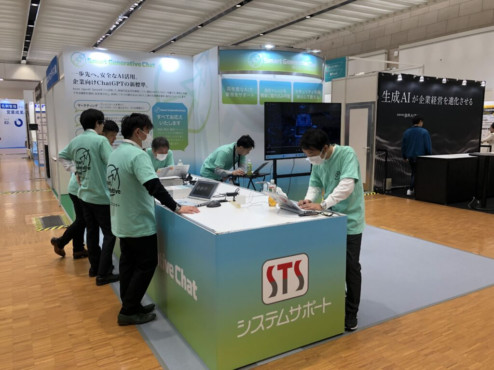
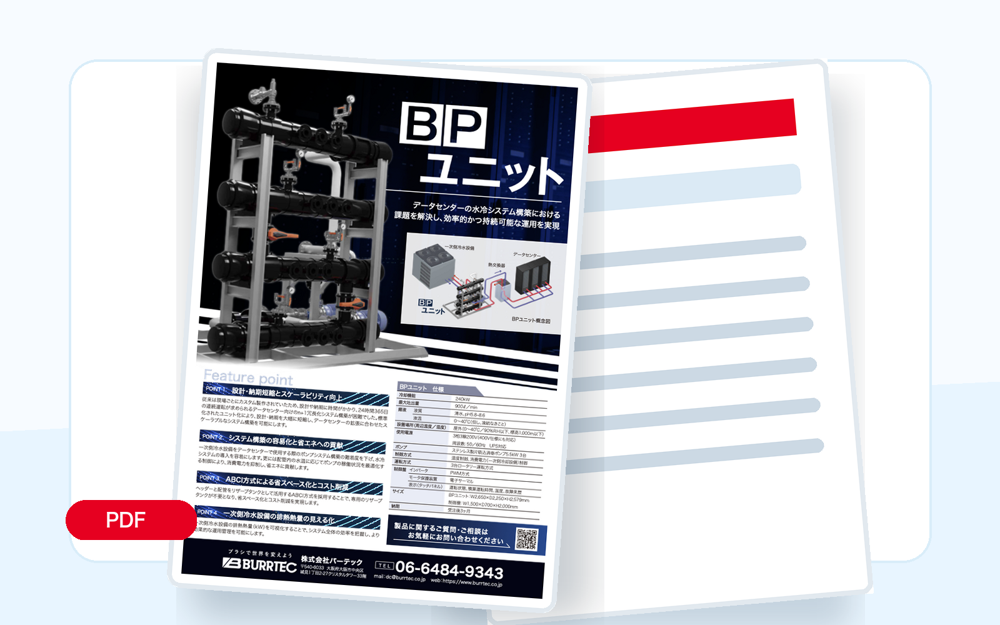

初めてで何から始めればいいか分からない
準備の流れ、業者の探し方、スケジュール設計まで、最初の一歩から整理します。
展示会担当者のための伴走型サポート
企画・ツール制作・設営・アフターフォローまで。 販促係長が御社のチームの一員として伴走します。
相談・見積もり無料。しつこい営業は一切しません。

展示会担当者の本音
忙しい中で任された展示会。社内に専任者がいなくても、まだ何も決まっていなくても大丈夫です。
準備の流れ、業者の探し方、スケジュール設計まで、最初の一歩から整理します。
複数社への発注・確認・調整を一本化し、担当者が本業に戻れる状態をつくります。
出展目的とターゲットを言語化し、商談につながる訴求・導線・次回の改善提案まで設計します。
搬入、機材、スタッフ、印刷物などの突発対応も、現場に入り込んで即時に動きます。
単なるブース制作会社ではありません
サービス全体像
担当者が抱えがちな細かい判断、確認、手配をまるごと引き受けます。
お客様：やりたいことを雑談レベルで話すだけ
目標設定、ブースコンセプト、ツール提案、予算計画まで準備します。
お客様：素材・情報を渡すだけでOK
チラシ、パネル、動画、ノベルティ、コンパニオン手配まで一括対応します。
お客様：イメージ通りの施工を確認するだけ
ブース施工、什器制作、搬入、設営、撤去、現場管理まで完遂します。
お客様：来場者対応に集中できる
スタッフ常駐、進行管理、機材や印刷物のトラブルにも即時対応します。
お客様：自社の荷物を片付けるだけ
撤去、什器の搬送、リスト整理、追客メール、次回改善まで伴走します。
複数社への発注・連絡・確認・調整…すべて引き受けます
ざっくり“無料”相談してみる →他社との違い
一般的な装飾会社との違いは、展示会の前後まで入り込むことです。
| 比較項目 | 展示会まるごとサポート | 一般的なブース装飾会社 |
|---|---|---|
| 企画・コンセプト立案 | 対応 戦略から提案 | 対応外 |
| ツール制作 | 対応 チラシ・動画・ノベルティまで | 別途外注が必要 |
| ブース施工 | 対応 施工・搬入・撤去まで | 対応 主業務 |
| 当日スタッフ常駐 | 対応 進行管理・トラブル即時対応 | 搬入・撤去のみが多い |
| 会期後の追客設計 | 対応 リスト整理・メール配信設計 | 対応外 |
| 次回出展への改善提案 | 対応 1回で終わらず伴走 | 完成がゴール |
支援事例
ブース写真だけでなく、制作物などの支援まるごとをご覧ください。

実績写真工業炉メーカー ／ 企画〜追客
出展目的の再定義から着手し、ターゲットに合わせて訴求・展示物・追客メールを刷新。
 実績写真
実績写真
衛生管理用品メーカー ／ 工数削減
企画から当日まで全プロセスを代行し、複数社への発注管理を一本化しました。

実績写真ITソリューション ／ 商談化率向上
デジタルツールを活用したリード収集と、会期後の追客フローを整備。

前日・当日のトラブル対応
準備段階だけでなく、本番の修羅場にも一緒に立つ。ここが決定的な違いです。
周囲のブースを見て急遽プレゼンを実施したくなった場合も、マイク・スピーカーを即日手配。
当日手配即日対応昼食や打ち合わせで席を外したいとき、販促係長が現場に立ち、一次対応を行います。
留守番対応来場者一次対応会期途中の不足にも、近隣調達や代替品手配で配布を止めない段取りを組みます。
緊急調達会場周辺手配チラシが想定以上に減ったときも、緊急対応可能な印刷会社を手配します。
翌日デリバリー印刷物手配お客様の声
毎回、何社もの業者に個別で発注・確認。展示会準備だけで本業が圧迫されていました。
窓口が一社になり、準備工数が半分以下に。本業に集中できる余裕が生まれました。
ブースはきれいなのに、毎年リード数がほぼ同じ。何が悪いのか分かりませんでした。
ターゲットと訴求を見直しただけで商談数が1.8倍に。装飾以前の課題に気づけました。
当日のトラブルが怖く、展示会前は毎回眠れませんでした。
担当者が会場にいてくれるので、今では不安なく当日を迎えられます。
FAQ
ざっくり相談の前に、よくいただく疑問をまとめました。
可能です。装飾だけのご相談でも、成果につながる見せ方や導線まで一緒に確認します。
可能です。チラシ、パネル、動画、ノベルティなど、必要な範囲だけでも対応します。
もちろん対応します。準備スケジュール、必要物、社内確認事項から整理します。
出展規模、制作物、施工内容によって変わるため、初回相談で必要範囲を確認してお見積もりします。
まずは会期と現状を教えてください。優先順位をつけて、間に合う現実的な進め方をご提案します。
まずは雑談レベルで
まだ何も決まっていない、要件もまとまっていない状態で大丈夫です。 見積もりの前に、展示会担当者としての悩みをお聞かせください。